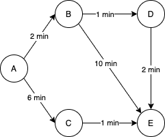

-
O que é o Algoritimo Guloso?
O algoritimo guloso, do inglês "Greedy algorithm" (algoritmo ganancioso), se trata de uma estratégia de implementação para algoritimos que visa oferecer uma solução simples para problemas de otimização. Sua execução propõe uma resposta fácil, onde dentre as alternativas oferecidas, o algoritimo irá selecionar a opção que julgar mais vantajosa no momento da escolha, isso sem considerar para o que a alternativa possa levar no longo prazo, por conta dessa caracteristica esse modelo é muitas vezes também chamado de miope.
-
Explicando o modelo
Aprofundando um pouco mais na execução desse algoritimo, será possível encontrar uma série de caracteristicas que ditam o seu funcionamento.
Para dar inicio, como mencionado anteriormente, na sua execução essa técnica irá focar em encontrar o que pareça se tratar de um solução ótima para o problema, ao menos no momento da busca. Para isso, são feitas comparações entre as opções possíveis, com base em um parâmetro que é passado para o algoritimo anteriormente. Neste processo de seleção, são ignorados os resultados futuros que cada alterntiva possa acarretar, em razão disto, muitas vezes resultando em escolhas que nem ao menos gerem uma solução para o problema proposto. Porém, jamais volta atrás em uma escolha feita.
O algoritimo guloso é simples e possui uma fácil implementação, porém nem sempre gera a melhor solução possível, dependendo da quantidade de informações disponíveis para ser capaz de produzir uma boa resposta.
Para exemplificar essa dinâmica, supodondo um algoritimo deva obter a maior soma com base nos números dispostos, assim como é ilustrado na imagem, o algoritimo guloso irá selecionar o maior número de cada iteração, porém esse procedimento não o levará para a melhor solução possível.

-
Exemplo
Para trazer uma demonstração prática da técnica, temos o Algoritmo de Dijkstra, um algoritmo de caminho mínimo usado em grafos. Este algoritimo visa calcular o caminho mais curto entre um vértice inicial e um ou todos os outros vértices de um grafo, isso seguindo por arestas com pesos definidos.
Para realizar esse cálculo, a cada iteração o algoritimo irá tentar fazer o menor movimento com as possibilidades oferecidas no momento, sem voltar atrás em uma decisão que já tenha feito. Confiando que resulte na melhor solução possível.
Dessa forma, seguindo o grafo representado na imagem, supondo uma partida do vértice A com destino ao vértice E. Inicialmente o algoritimo irá julgar o caminho para o vértice B o mais vantajoso, por levar apenas 2 minutos para se locomover, então se movimentando para lá. Em seguida, se baseando no mesmo cirtério, o algoritimo escolherá o vértice D como o próximo destino. E entao, por fim seguirá para o vértice E, atingindo seu objetivo.
Resultando na rota A -> B -> D -> E com um custo de 5 minutos. Neste caso, obtendo êxcito em encontrar a menor rota possível.
